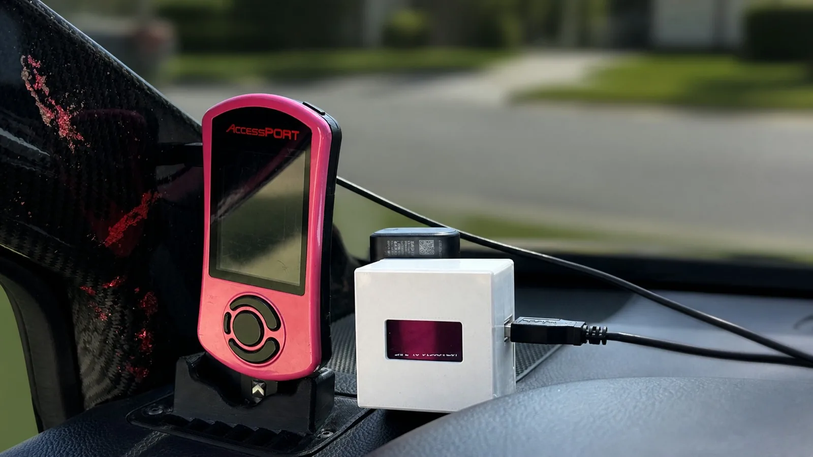
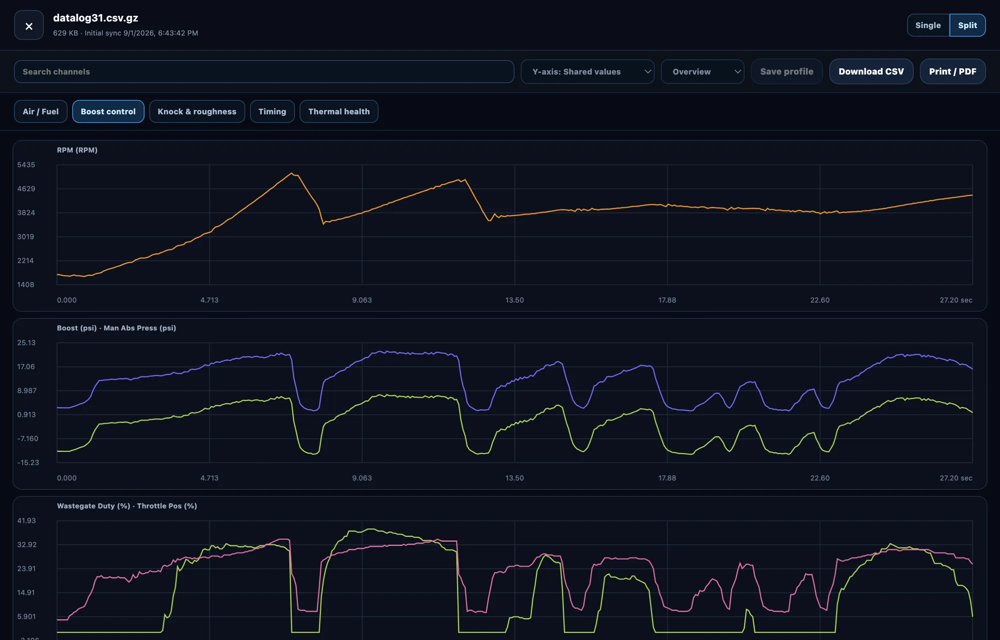
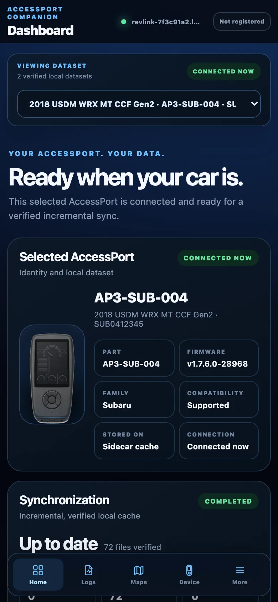
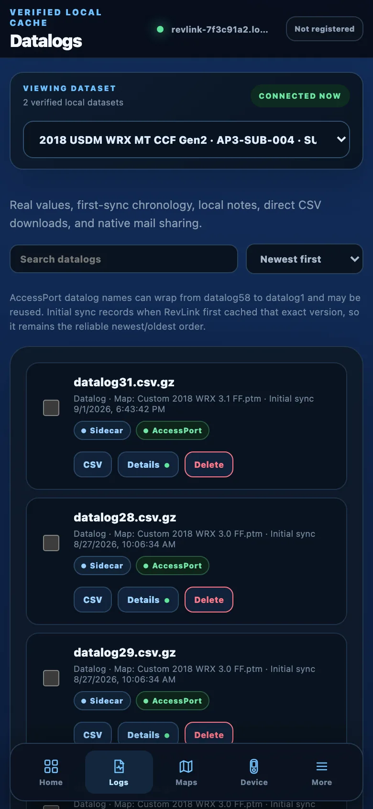
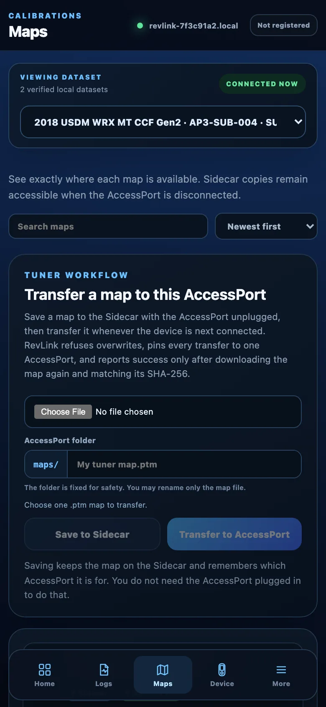
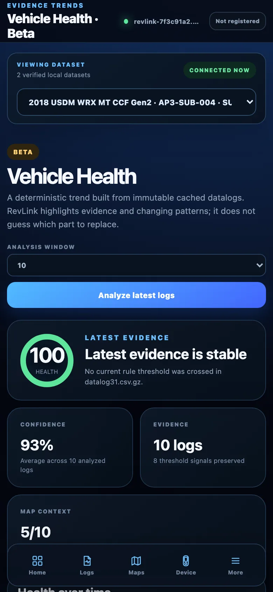
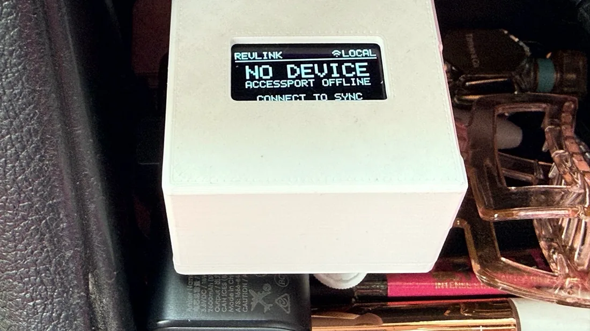

Use your AccessPort
without a laptop.
The COBB AccessPort holds your datalogs and maps over USB — but it only talks to a Windows PC or a Mac. So the moment you want a log at the track, at a meet, or in your own driveway, you go find a computer.
RevLink Sidecar is an ESP32-P4 that sits between the AccessPort and your phone. Plug in, open a web page, and your files are there.
AccessPort ──USB-A host──> ESP32-P4 Sidecar ──Wi-Fi──> your phone
│
microSD
Chromium browsers only for flashing — Chrome, Edge, Arc, Brave. Apache-2.0. Free, and nothing to sign up for.

Why it exists
My girlfriend's 2018 WRX is on an AccessPort. Neither of us tunes it — she datalogs, sends the logs to her tuner, he sends a map back, she flashes it. That is the whole routine, and it is the same one most people with a tuned car are in.
Every step of it except the driving needed a Windows PC or a Mac. Pull a log: laptop. Send it: laptop. Get the new map onto the AccessPort: laptop. So a log would sit on the device until she was home at a computer — or until I was free to do it for her. Neither of those is a good reason for someone to wait on their own car.
That is what this is for. She plugs the AccessPort into the Sidecar, opens a page on her phone, and the logs are there: graph one, email it to the tuner, done, in a parking lot. When a map comes back she saves it from her phone and it lands on the AccessPort by itself the next time she connects. Then she flashes it from the AccessPort, exactly as before.
Making that possible without her needing a laptop, or me, is the entire point of the project. Everything else here followed from it.
What it does
- Syncs on its own. Plug in the AccessPort and new datalogs and maps copy to a microSD card you own. Only what changed, and every file checksum-verified.
-
Puts maps back on, and clears space.
Send a
.ptmto the AccessPort from your phone — even with the AccessPort unplugged, in which case it transfers by itself at the next sync. Every write is read back and checked before it counts as done. Files inmaps/anddatalog/can be deleted too, so a full device doesn't send you looking for a laptop. Both are off until you turn them on. - Serves a web portal from the device. It joins your home or shop Wi-Fi when it can, and starts its own hotspot when it can't. No internet required, ever.
- Graphs your logs on your phone. Single and split views, searchable channels, presets for Air/Fuel, Boost, Knock, Timing and Thermal, exact values under the pointer.
- Vehicle Health. A deterministic, local, rule-based pass over logs you've already synced. No AI, no phone-home — it shows you the evidence it used.
- Handles more than one car. Separate datasets per AccessPort, so a shop doesn't mix files up.
- Offline by design. No account, no telemetry, no cloud dependency. Your data stays on your card.
The portal, on a phone
The portal is served by the Sidecar itself and opens in any browser on your phone or laptop. Nothing below is a mockup. These are real screens from a Sidecar with an AccessPort plugged into it. Serial numbers and map names have been changed. The Not registered badge in the corner is an optional, unfinished hostname feature; nothing here needs it.

-

Knows what's plugged in Part number, vehicle and firmware, and whether this dataset is the device in front of you. -

Every log, with its map Badges say where each file actually lives. Logs remember which map they were recorded on. -

Maps, both directions Save a tuner's map with the AccessPort unplugged; it transfers on its own next time you connect. -

Vehicle Health (beta) Runs a fixed set of rules over logs you have already synced and shows which ones tripped. No model, nothing sent anywhere.

One button, three things
There is a single button on the case, and the one worth knowing is the
double-press: it puts a Wi-Fi QR code on the little screen when the
Sidecar is running its own hotspot, so you scan it and you're on. If it
has joined your home or shop network instead, the same double-press shows
its revlink-<id>.local address rather than a QR.
Holding it for two seconds shuts the Sidecar down properly — it cancels whatever is running, unmounts the card, and sleeps, so you can unplug it without wondering whether you just corrupted something.
Both of those need the optional screen fitted. Without one it still runs and still shuts down on a hold; there's just nowhere to draw a QR code.
What it deliberately doesn't do
This reads and writes files. It is not a tuning tool, and it is a companion to your AccessPort rather than a replacement for it.
- No ECU flashing. Not now, not planned.
- No real-time tuning.
- No decoding or unlocking of protected map content.
- No encryption on the portal. It is plain HTTP, meant for your own Wi-Fi or the Sidecar's own hotspot. Don't port-forward it.
- It can copy a map file onto the AccessPort's own storage, but installing that map onto the ECU stays a deliberate action on the AccessPort itself. Writes and deletes ship locked, behind two separate switches, and have to be turned on.
Parts list
- A Waveshare ESP32-P4-NANO, around $30 — the board this runs on. Not the ESP32-P4-WIFI6-DEV-KIT, which is different silicon.
- A microSD card — any will do.
- A USB-C power bank. The reference build runs off an Anker Nano.
- Optional: a 1.3″ SH1106 OLED for status at a glance, and for the button trick below — the SPI one, not I2C.
- Optional: the 3D-printable case — STL and 3MF included.
The ESP32-P4-WIFI6-DEV-KIT works too, but needs its own build: it uses different silicon and the images are not interchangeable. The flasher checks which board you have before writing anything.
Affiliate disclosure. The parts links above are Amazon affiliate links. As an Amazon Associate I earn from qualifying purchases, at no extra cost to you. They point at the exact parts this was built and tested on, which is the reason they are here; buy them anywhere you like. Nothing in the project depends on where the hardware came from.
What's proven on hardware
The current release is 0.2.5, and it runs on the maintainer's own car.
Syncing, checksum verification and the log viewer have been used on real
hardware for months. So have map writes: several different maps copied
onto an AccessPort in service, each read back and checksum-matched before
the Sidecar called it done, some of them unattended after a sync.
Deletes from maps/ and datalog/ have been
tested the same way. All three ship in the published image.
SAFETY.md lists precisely what is and isn't proven. If something there is wrong, that's a bug worth reporting.
Chromium browsers only for flashing. Apache-2.0, and nothing to sign up for.
Contributions wanted
Especially: enclosure revisions (the lid still needs internal mounting
posts for the OLED), AccessPort part numbers this build doesn't know
yet, and portal UX. Everything runs on a laptop —
./scripts/ci-local.sh, no board required.